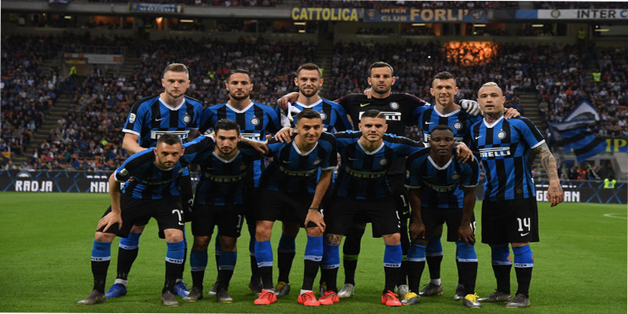
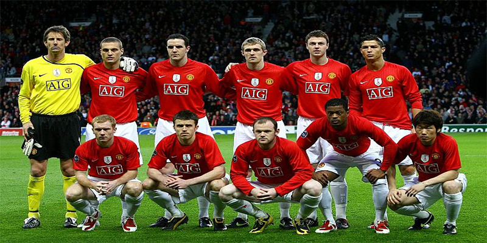
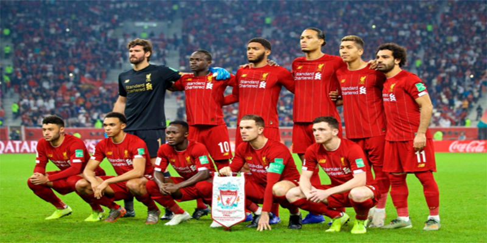
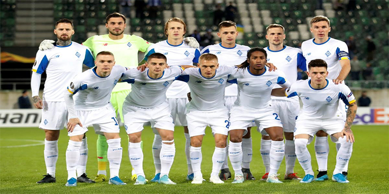
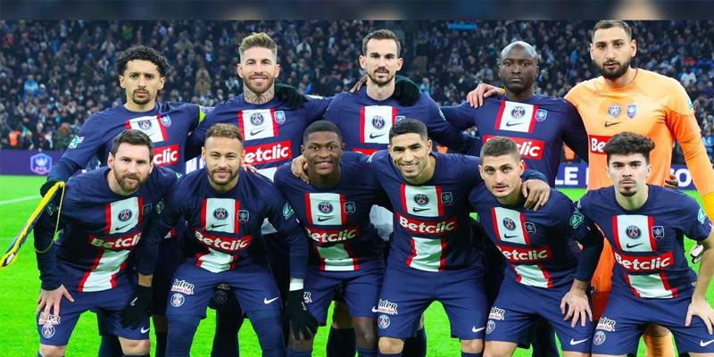
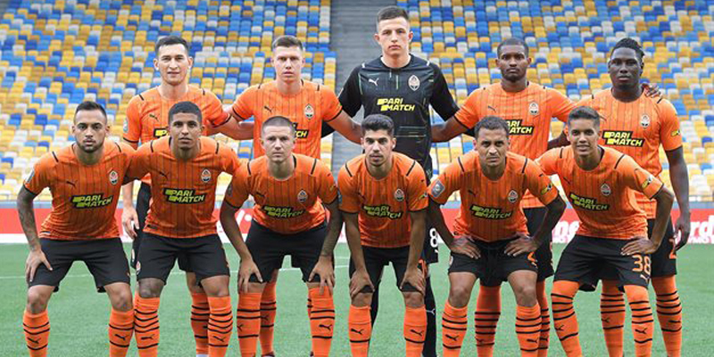

«Интернациона́ле», или просто «Интер»; (итал. Football Club Internazionale Milano, итальянское произношение: [ˌinternattsjoˈnaːle]) — итальянский профессиональный футбольный клуб из города Милан, выступающий в Серии А. Один из самых титулованных клубов Италии. Клубные цвета — чёрный и синий.
«Интер» — единственная команда в Италии, которая, со дня своего создания, не покидала высший дивизион чемпионата Италии[3]. Клуб выиграл 35 национальных трофеев, 19 раз — чемпионат Италии, 9 раз — Кубок Италии и 7 раз — Суперкубок Италии. С 2006 по 2010 год клуб выиграл пять скудетто подряд. «Интер» побеждал в Кубке европейских чемпионов два раза подряд, в 1964 и 1965 годах. В 2010 году выиграл Лигу чемпионов. Клуб также выиграл три Кубка УЕФА, два Межконтинентальных кубка и один Клубный чемпионат мира. «Интернационале» является одним из семи клубов Европы (и единственным итальянским), когда-либо сделавшим так называемый «требл», это произошло в сезоне 2009/10.

«Манче́стер Юна́йтед» (полное название — Футбольный клуб «Манчестер Юнайтед», англ. Manchester United Football Club; английское произношение: [ˈmæntʃɪstər ju:ˈnaɪtɪd 'futbɔ:l klʌb]) — английский профессиональный футбольный клуб из Траффорда, Большой Манчестер. Был основан в 1878 году под названием «Ньютон Хит (Ланкашир энд Йоркшир Рейлуэй)», в 1902 году изменил название на «Манчестер Юнайтед». Один из самых популярных футбольных клубов в мире[6][7][8]. Один из основателей английской Премьер-лиги в 1992 году[9].
Домашний стадион «Юнайтед», «Олд Траффорд», был открыт в 1910 году. Он является крупнейшим после «Уэмбли» футбольным стадионом в Англии и вмещает около 75 тысяч зрителей.

«Ливерпу́ль» (полное название — Футбольный клуб «Ливерпуль», англ. Liverpool Football Club, английское произношение: ['lɪvəpu:l 'futbɔ:l klʌb]) — английский профессиональный футбольный клуб из одноимённого города, расположенного в графстве Мерсисайд. Был основан в 1892 году; в следующем году вступил в Футбольную лигу Англии. С момента своего создания проводит домашние игры на стадионе «Энфилд». Стадион был построен в 1884 году, на нём изначально играл другой ливерпульский футбольный клуб, «Эвертон»[4]. В настоящий момент «Энфилд» вмещает порядка пятидесяти четырёх тысяч болельщиков[5].

Дина́мо» (укр. «Динамо») — украинский футбольный клуб из города Киев, постоянный участник чемпионатов Украины по футболу. Самый титулованный футбольный клуб СССР и Украины[4][5].
Клуб основан 13 мая 1927 года[6]. Первая зарегистрированная игра состоялась 17 июля 1928 года против одесского «Динамо» (2:2). В советский период клуб выиграл 13 чемпионатов СССР, 9 Кубков СССР, 3 Суперкубка СССР. Один из двух футбольных клубов (вместе с московским «Динамо»), участвовавший во всех чемпионатах СССР в высшем дивизионе. Стал первой не московской командой, выигравшей чемпионат СССР.
На международной арене выиграл 2 Кубка обладателей кубков (1975, 1986) и Суперкубок УЕФА (1975). Первый советский клуб, завоевавший европейский трофей.
При независимой Украине выиграл 16 национальных чемпионатов, 13 национальных кубков, 9 Суперкубков Украины

«Пари́ Сен-Жерме́н» (фр. Paris Saint-Germain Football Club; французское произношение: [paʁi sɛ̃ ʒɛʁmɛ̃]) или ПСЖ (фр. PSG) — французский профессиональный футбольный клуб из Парижа. Основан в 1970 году. Самый титулованный клуб страны. «Пари Сен-Жермен» одиннадцать раз становился чемпионом Франции, четырнадцать раз выигрывал Кубок Франции и десять раз — Кубок французской лиги. Клуб добивался успеха на европейской арене, выиграв Кубок обладателей кубков УЕФА в 1996 году, обыграв в финале венский «Рапид».
В 1991 году клуб был куплен каналом французского телевидения — Canal+, но вследствие отделения спортивного подразделения, в 2006 году ПСЖ был куплен двумя инвестиционными фондами: Colony Capital, Butler Capital Partners и американским банком — Morgan Stanley. 30 июня 2009 года Colony Capital купил часть Morgan Stanley и стал акционером, владея большей частью акций. 31 мая 2011 года фонд Qatar Sports Investments выкупил 70 % акций ПСЖ.

«Шахтёр» (укр. «Шахтар») — украинский профессиональный футбольный клуб из города Донецк, выступающий в Премьер-лиге. Обладатель Кубка УЕФА, четырнадцатикратный чемпион Украины, тринадцатикратный обладатель Кубка Украины, девятикратный обладатель Суперкубка Украины, четырёхкратный обладатель Кубка СССР.
До 2014 года свои домашние матчи команда проводила на стадионе «Донбасс Арена», открытие которого состоялось 29 августа 2009 года. Из-за вооружённого конфликта на востоке Украины «Шахтёр» переехал в Киев[3][4], и с 2014 года тренировочной базой «горняков» является олимпийский комплекс «Святошин»[4][5]. В 2014—2016 годах «Шахтёр» провёл большинство домашних матчей во Львове на «Арене Львов»[6], с февраля 2017 года по март 2020 года клуб играл на ОСК «Металлист» в Харькове[7][8]. С мая 2020 года домашним стадионом «Шахтёра» является НСК «Олимпийский» в Киеве[8][9][10]. Контракт относительно выступлений «горняков» на «Олимпийском» подписан на три года[11].